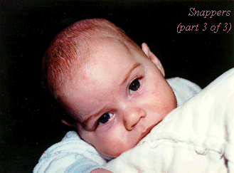

<HTML><HEAD><TITLE>Snappers</TITLE></HTML> 

<BODY BACKGROUND="" BGCOLOR="#ffffff" 
TEXT="#000000" LINK="#603000" ALINK="#ffff00" VLINK="#503000">
<CENTER>

</CENTER><P>

Back home, we all spent the rest of the day in a tired daze.  At night 
Maggie and I put the kids to bed and sank into the living room couch 
drained and weary. For a long time we just sat there.  What we'd just 
been through may not sound so bad -- our baby had gotten sick, and now 
he was better.  It sounds like nothing when I hear myself tell it.  
But Maggie and I were burnt.<P>

We had nothing planned for the night, and we knew if we turned on the TV we'd
zone out till we fell asleep.  "I feel like we should do something," I said.
"We've been sitting around worrying for two days."<P>

"We could play Scrabble," Maggie said.<P>

I didn't even have to say 'Naah.' We wouldn't have had the energy 
to pick our seven letters.  <P>

We stared at the walls some more.  Maggie said, "I just thought of a drink I 
never made for you.  Have you ever heard of snappers?"<P>

"No," I said.<P>

"I think we have all the ingredients.  You take a shot glass and fill it 
halfway with any hard liquor -- you can make vodka snappers, gin snappers, 
whatever.  After you put the liquor in  you fill it the rest of the way with 
a brand new bottle of club soda -- it has to be brand new so it'll be really
fizzy -- and then you put your palm over the top and BANG it 
on the counter and drink it real fast.  And it, like, fizzles in your mouth.  
I dunno, I'm kind of in the mood for a snapper."<P>

I looked at her.  "I'm DEFINITELY in the mood for a snapper."<P>

"Lemme go see if we have everything!"<P>

We had a new bottle of club soda and a few shot glasses we'd bought on impulse 
or gotten as presents.  My favorite was my Late Show With David Letterman shot 
glass, which I'd bought directly from either Sirabul or Mujibar in their shop
next to his theatre.  The only hard liquor we had was a half-pint of Jack 
Daniels, so Maggie made a Jack Daniels snapper.  I went first; she BANGED 
it on the counter and thrust it towards my face, and I slugged it down just
as it burst into a fizzy explosion of foam.  It was fun.  She made herself 
one, then I took another turn and then she had another one too.<P>  

We stood there looking at each other, tired and now a little dizzy too.  Maggie
said, summing up the day's events, "The fucking joys of parenthood, huh?"<P>

"Just sunshine and laughter, all the day long," I said.<P>

Back in the living room, we got a case of the giggles.  We heard a benign
cough from the kids' room and Maggie said "There goes Eraserhead again,"
which totally cracked me up.  We flipped the TV on and started 
insulting everybody on every channel.  Three depressed-looking old people
with British accents were having a deeply serious discussion on Channel 13;
"Shut up, you're not even British," I told them.  A bald weatherman was 
pointing towards the State of Maine; Maggie yelled "Get the fuck out of the 
way, your fat ass is blocking Kansas!"  We didn't even care what we were 
saying; we just needed to vent hostility.  A newsman with a horrified 
expression was in the middle of a sentence about something that 
happened in a faraway shopping mall, something about a pleasant day that 
turned into a nightmare for this group of midday shoppers.  "Well, they 
shouldnt've been going around fucking shopping at midday!" <P>

Suddenly we heard a sound behind us, and turned to find Eliza standing there
confused and frightened in her pink Little Mermaid nightgown, her eyes red 
from lack of sleep and half-closed from the light, her brown hair flying in a 
haze of night-time static.  I have no idea how much of our TV insult-fest 
she'd been listening to.  <P>

"I heard a banging noise," she said in a tiny voice.<P>

We looked at her.  "We were drinking snappers," I said.  "It's a drink that
you bang on the counter to make it fizzy."<P>

She stared at us.  "Really?"<P>

"Yes."<P>

"Can I try one?"<P>

" I don't think so," I said. <P>

"Then can I just stay up with you a few minutes?"  <P>

"No," Maggie said.  "Let the grownups have their grownup time."<P>

But something struck me as lonely about the way 
she had to go back by herself when we were out there having fun.  She'd gone 
through the last two days with us, I realized, and it had been hard on her too.
Maggie and I had had the release of getting drunk and laughing and having fun, 
and Eliza had had no release at all.  <P>

Maggie must have been thinking the same exact thing.  "Okay, wait," she called 
out just as Eliza was leaving the room.  "I have an idea."<P>

She went into the kitchen and looked through a couple of cabinets.  Eliza and
I stood at the doorway watching.  Maggie took out two more shot glasses, one 
we'd bought at the Grand Canyon and one with my college insignia on it.  She 
poured club soda into them, then topped two of them off with Jack Daniels.  
Pointing to the third one, she asked Eliza, "Honey or maple syrup?"<P>

"I can really have one?" <P>

"Yes -- honey or syrup?"<P>

"Honey."  <P>

She topped Eliza's off with a spoonful of honey, then told her to watch 
while she and I took our shots.  Then she picked up Eliza's shot, BANGED it
on the counter and thrust it quickly at her.  Eliza got half of it 
down before the whole foaming mess burst out of her mouth, and we all 
cracked up laughing.<P>

We had another round, and staggered into the living room to relax and 
giggle and insult the TV some more.  Eliza sat straight-backed and mostly 
quiet in her chair, amazed and delighted to be hangin' with the big people 
after bedtime for the first time in her life, and intrigued at how silly
she'd discovered us to be.  <P>

A strange thought came to me that we used to get drunk with our friends but
now here we were getting drunk with our daughter, and it seemed to me that
something in our lives had come full circle, had shifted itself radically
and settled into its new natural place.<P>

And there we sat, two of us drunk on Jack Daniels and one on placebo, until
sleep overcame us and we turned off the lights and finally went to bed. <P>

<CENTER><I>
<A HREF="../Mall/WaltWhitmanMall.html">Next ...</A><P>
</I></CENTER>

<A HREF="../Queensboro.html">Queensboro Ballads</A><BR> by
<A HREF="http://www.litkicks.com/HomePages/LeviAsher.html">Levi Asher</A><P>
</BODY></HTML>
